AI Academy · Level 2 · Grade 7 · Week 35 · Student lesson
Improve and Challenge
Learn to understand, design, build, test and explain AI systems responsibly.
Project: Transparent Book Recommender
Before you start
Week 28: comparisons need fixed requests and criteria.
Plan time to read, investigate and explain. Keep predictions separate from observations.
Student lesson · 1 of 17
Your mission
Your learning target
I can repair a specific observed failure.
I can check that earlier behavior still works.
I can keep a truthful change and failure record.
Remember before reading
Close your notes first. A rough first answer helps us choose the right starting point; it is not a score for your ability.
Without opening the old lesson, explain one key idea from Test Diverse Users. Give an example and a mistake that the idea helps you avoid.
Without opening the old lesson, explain one key idea from Project Problem and Success Test. Give an example and a mistake that the idea helps you avoid.
Without opening the old lesson, explain one key idea from Evidence and Sources. Give an example and a mistake that the idea helps you avoid.
After trying, check the relevant lesson or ask your teacher. Change the part of your explanation that the evidence shows was wrong.
Week 35: Improve and Challenge
A controlled improvement changes one design choice and reruns the same tests.
THINKER MISSION
Compare before/after scores and explain the tradeoff.
Thinker name and date:
Readiness for the connected explanation
Why rerun old passing cases after a fix?
Readiness for Testing functions and interfaces
Why can testing only valid_item miss a pipeline bug?
This week’s end goal
By the end, I can make a focused repair and challenge it with regression and order-invariance tests.
Student lesson · 2 of 17
Notice the evidence
PICTURE STORY
Notice → Predict → Explain
Begin with visible evidence. Do not explain more than the picture and information support.
MYSTERY
The learners must use improve and challenge to solve a problem. What information do they have? What decision or calculation do they make? What would count as evidence that it worked?
Three observations (what you can point to):
My prediction and the clue supporting it:
A closer explanation
A fictional chooser wrongly excludes an activity at the exact time limit because it uses minutes < limit. The requirement says at most, so equality must qualify. Repair that condition, then test below, at and above the boundary plus earlier tie and invalid-input behavior.
Apply the connected idea: Testing functions and interfaces
Test the chooser at two scales. A unit test checks one validator or score calculation. An integration test runs validation through selection and reporting. Write expected outcomes from the specification, not by calling the same function twice.
Student lesson · 3 of 17
See how it works
VISUAL MECHANISM
Input → Process → Output
Trace the information. At each stage, ask what changed and how you could test it.
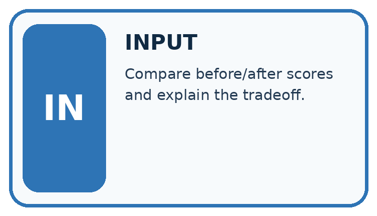
↓
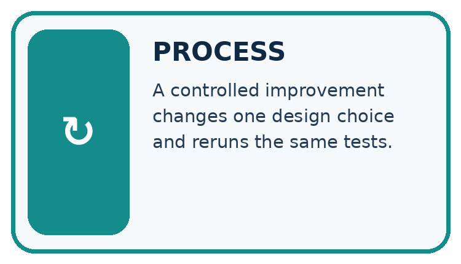
↓
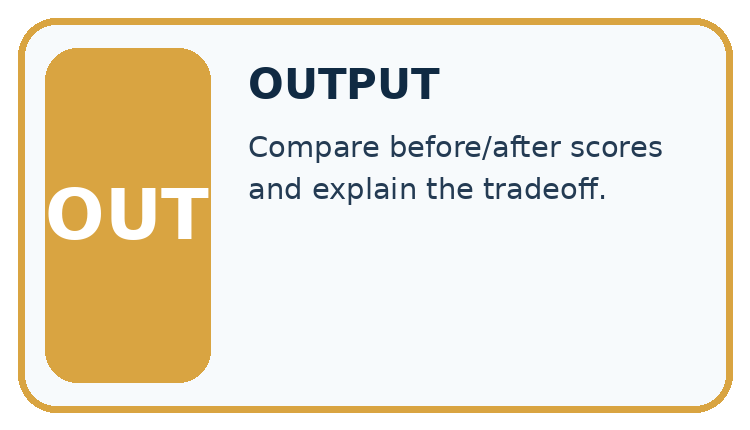
Which stage could fail even when the other two are correct? Explain:
A closer explanation
def eligible(minutes, limit):
return minutes <= limit
for minutes, expected in [(9, True), (10, True), (11, False)]:
actual = eligible(minutes, 10)
assert actual == expected
print(minutes, actual)Follow the evidence
The repaired predicate prints 9 True, 10 True and 11 False. It assumes validated numeric durations; it is not a replacement for the schema validator. A focused change is easier to explain and evaluate than unrelated edits made at the same time.
Repair the rule, then keep the evidence
At most includes equality. For a limit of 10, the durations 9 and 10 qualify while 11 does not. The strict comparison minutes < limit wrongly rejects 10; changing it to minutes <= limit repairs that boundary. Check below, at and above the boundary, then rerun earlier tie and invalid-input cases. Keep the original failure record so another person can understand what changed and which evidence supports the repair.
Apply the connected idea: Testing functions and interfaces
def score(item):
return 2 * item["fun"] + item["learning"]
cases = [( {"fun": 0, "learning": 0}, 0),
( {"fun": 3, "learning": 2}, 8),
( {"fun": 5, "learning": 5}, 15)]
for item, expected in cases:
assert score(item) == expected
print("3 score cases passed")Follow the evidence
The code prints its success message only if all assertions pass. It checks the scoring component but says nothing about duration filtering, malformed records, ties or reporting. Add focused cases for those requirements. Use the production functions from earlier weeks rather than rewriting a second copy just for tests.
Test the connections as well as the pieces
A score unit test asks whether the scoring function calculates the specified number. An integration test asks whether validation, filtering, scoring and reporting work together. A correct score does not establish that invalid records were rejected or that a tie was resolved correctly. Predict the full report from the input records before running. Check its counts and reasons as well as its selected name, and repeat a tie case with reversed input order.
Connect the picture and the explanation
Point to the input, the deciding step and the result in this week’s visual. Explain the same step in ordinary words. A picture helps when you can say what each part represents.
Student lesson · 4 of 17
Compare the cases
CASE GALLERY
Four Tests, Four Kinds of Evidence
A system is not understood until it survives more than one comfortable example.


NORMAL CASE: predict and name evidence. BOUNDARY CASE: predict and name evidence.


MISSING INFORMATION: predict and name evidence. TRANSFER CASE: predict and name evidence.
Which case is most likely to reveal a hidden assumption? Why?
Change one thing in the pictured case
Change: An alternative patch simply increases the limit to 101.
Prediction: C is wrongly admitted as well as A.
Reason: Changing the maximum alters the contract instead of repairing its comparison.
Student lesson · 5 of 17
Words that unlock the idea
VOCABULARY LAB
Words You Can Use to Reason
A definition matters when you can recognize the idea, use it, and contrast it with a near-miss.
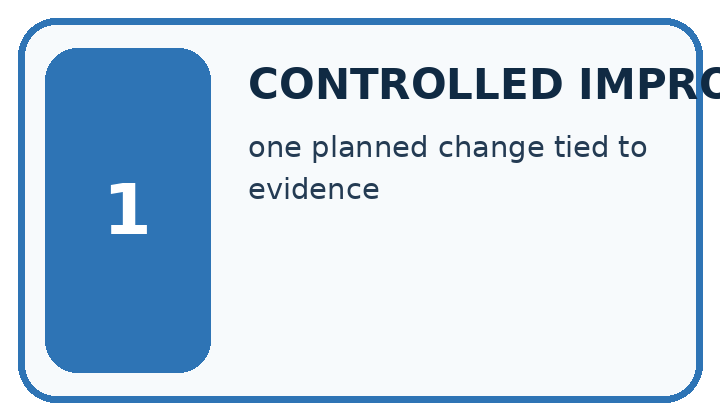
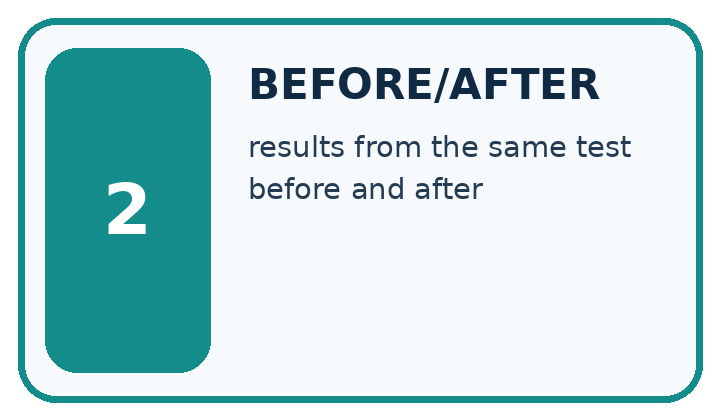
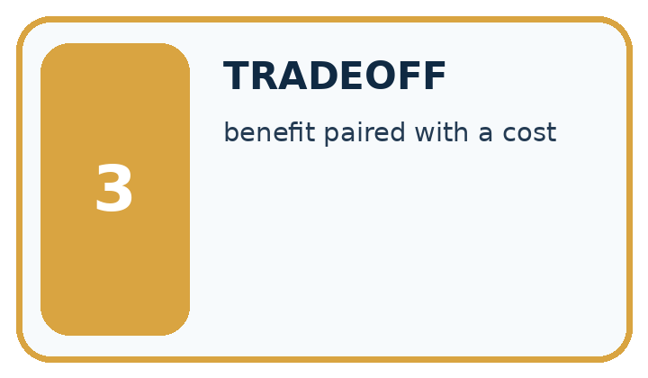
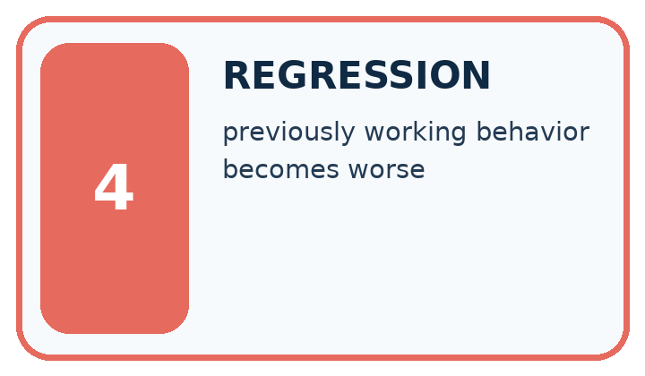
| Word | My own example | Not this / boundary |
|---|---|---|
| controlled improvement | A revision whose effect is checked under comparable conditions rather than assumed from a changed result. | |
| before/after | Results recorded prior to and following a change; other changes can affect the comparison. | |
| tradeoff | A situation where improving one desired property can make another harder to achieve. | |
| regression | In testing, a new failure introduced by a change; in modelling, prediction of a numeric target. Use the meaning indicated by the lesson. |
Words used in the closer explanation
| Word | Meaning |
|---|---|
| Regression suite | Earlier cases rerun after a change |
| Change log | A record of what changed and why |
| Root cause | The underlying reason for a failure |
| Residual risk | A limitation or possible failure remaining after a repair |
Terms for Testing functions and interfaces
| Term | Meaning |
|---|---|
| Unit test | A check of one small component |
| Integration test | A check of connected components |
| Fixture | A controlled input used in a test |
| Oracle | An independent source of the expected result |
Student lesson · 6 of 17
Follow a worked example
WORKED EVIDENCE
Reason Step by Step
Predict first. Then check each step. A correct answer without visible reasoning is incomplete evidence.
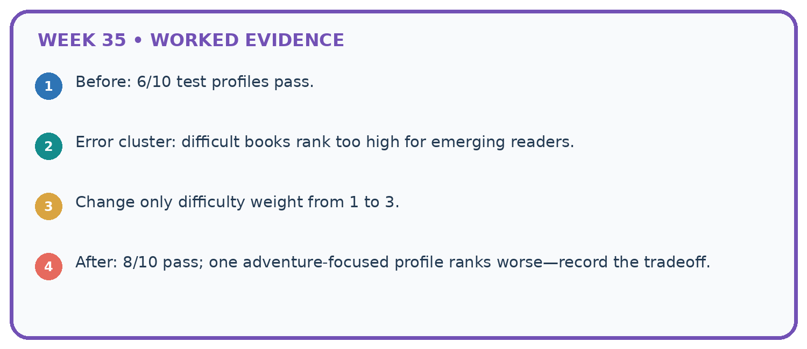
1. Before: 6/10 test profiles pass.
2. Error cluster: difficult books rank too high for emerging readers.
3. Change only difficulty weight from 1 to 3.
4. After: 8/10 pass; one adventure-focused profile ranks worse—record the tradeoff.
Recalculate, retrace, or restate the reasoning in your own representation:
CHECK Did the evidence answer the exact question? Did the total, path, or source record stay consistent?
A closer explanation
Apply the connected idea: Testing functions and interfaces
Learn from the worked case
Cover the result before checking it. Say what is given, choose the procedure, and follow one step at a time. Then uncover the result and explain your first mismatch. Ask why a step is allowed, not only what number it produces.
A pictorial worked case: Improve and Challenge
A fictional recommender excludes books at an intended including equality page limit.
The facts we will use
Contract: pages<=100; highest interest; ties choose smaller ID. Old code uses pages<100.
Rows A pages100 interest5; B pages90 interest3; C pages101 interest5.

Read the picture one step at a time
Why this result follows
A focused change makes the claim about what caused the error testable: the equality comparison rule caused this specific failure. Regression tests check surrounding behavior that should remain unchanged. A tie case and reversed input order are necessary because a correct boundary does not ensure deterministic selection. Log the old failure and revised replay separately.
What this example does not establish
Passing a small regression suite does not prove all behavior unchanged; record the suite’s actual coverage.
Read the labelled picture: Why are tests at both 100 and 101 needed?
Change one thing: An alternative patch simply increases the limit to 101. Predict the result before checking the explanation. What remains the same?
Student lesson · 7 of 17
Find and repair a mistake
ERROR DETECTIVE
Compare → Diagnose → Repair
Do not patch the answer. Find the earliest unsupported assumption, wrong step, or weak evidence.
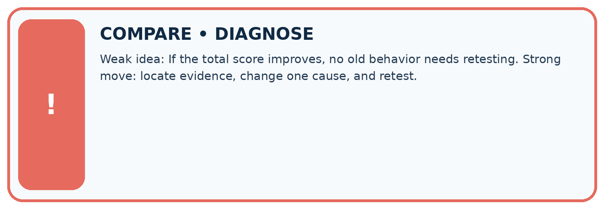
| Evidence record | Expected | Actual | Likely cause / next test |
|---|---|---|---|
| normal case | works | ||
| boundary case | stated rule | ||
| missing input | safe response | ||
| fresh transfer | generalizes |
Repair one cause. Why is this repair better than changing several things?
A closer explanation
A clean regression run does not erase the earlier failure. Keep before/after evidence and remaining limitations. If a fix was informed by reserved evaluation cases, report that contamination and obtain new independent cases.
Apply the connected idea: Testing functions and interfaces
Test results establish only the executed cases on the tested version. Retain failures and version information. Use explicit expected rejection behavior for invalid data instead of assuming every exception is acceptable.
Student lesson · 8 of 17
Practise together
LOGIC STUDIO
Trace Before You Run
Block code, pseudocode, tables, and diagrams are different ways to expose the same reasoning.

SET evidence_record PREDICT expected_result RUN one normal case and one boundary case COMPARE actual_result with expected_result IF different: locate first cause; change one factor; RETEST EXPLAIN result, limitation, and next safe step
Trace one input. Which line changes the state or chooses a path?
A closer explanation
Changing the expected boundary result to False would make the test pass while violating the requirement. Keep the requirement and independently calculated expectation; repair the implementation. If requirements truly change, document that as a policy change.
Apply the connected idea: Testing functions and interfaces
A test suite that only checks the winner name can miss wrong rejection counts. Check the full expected report: supplied, accepted, rejected, eligible, selected and reason. Avoid relying on dictionary display order when the contract concerns values.
Practise with less help: Test neighbors
Use workbook W2 for the connected example “Improving without hiding failures”. First fill the input and rule boxes. Try the middle steps before asking for a hint. After a hint, try the next step yourself.
| Plan | Do | Check |
|---|---|---|
| What is given? Which rule or procedure applies? | Record each intermediate step. | Does the result follow? What remains unknown? |
Explain your trace to a partner. Your partner points to one step to check. Swap roles on the next case. Each person writes their own explanation.
Check your reasoning
Use the worked case for Improving without hiding failures. Proposed explanation: “A successful run proves the conclusion”. Decide whether this explanation is supported. Point to the step or supplied fact that decides; explain your repair if needed.
Answer on your own before discussion. If you are unsure, say which step you need help with.
Practise the connected topic: Testing functions and interfaces
Use its named workbook W2. Identify the given inputs, try the middle steps with less help, then explain your trace. Check this claim before group discussion: A successful run proves the conclusion
Explain the picture
Why are tests at both 100 and 101 needed?
This is supported practice. Keep the separately named independent case for an attempt before feedback.
Student lesson · 9 of 17
Run the investigation
EVIDENCE LAB
Predict → Test → Record → Explain
Keep expected and actual results separate. Surprises are useful data when recorded honestly.
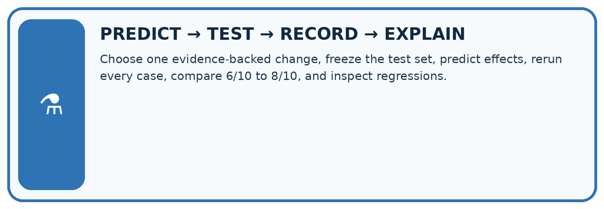
Choose one evidence-backed change, freeze the test set, predict effects, rerun every case, compare 6/10 to 8/10, and inspect regressions.
| Test / input | Prediction | Actual | Evidence / calculation | Change or keep? |
|---|---|---|---|---|
| normal | ||||
| boundary | ||||
| missing | ||||
| fresh transfer |
What did the hardest test teach you that the normal test did not?
Plan → try → check
Before trying: what do I expect, and why? While trying: which step could first go wrong? Afterwards: what did I actually observe, and what should change? Keep “not run” if you only traced the procedure.
Student lesson · 10 of 17
Build your understanding
MASTERY
From Knowing the Word to Owning the Idea
Move upward only when you can produce evidence without copying the worked example.

1 • NAME: Define the concept without repeating the textbook.
2 • TRACE: Show the information, state, branch, calculation, or evidence path.
3 • APPLY: Solve a different example independently.
4 • CHALLENGE: Find a boundary case, counterexample, or unfair outcome.
5 • EXPLAIN LIMITS: Say when the result should not be trusted or used alone.
My strongest evidence of independent understanding:
Student lesson · 11 of 17
Connect your project
CUMULATIVE PROJECT
Transparent Book Recommender
Every week adds one inspectable piece. The system must show how it reached a result.
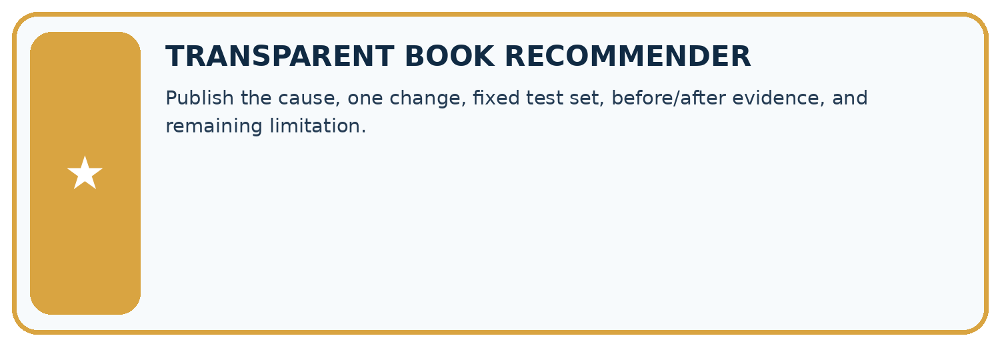
THIS WEEK’S CHECKPOINT Publish the cause, one change, fixed test set, before/after evidence, and remaining limitation.
SYSTEM MAP Reader need → allowed inputs → transparent rule or score → ranked candidates → explanation → test record → human decision
What will you add, change, or verify in the project this week?
What should remain under human control?
RESPONSIBLE DESIGN Collect only necessary information. Show uncertainty and limits. Never confuse a ranking with a fact about a person.
Evidence for your project
For each recommender revision, retain cause, code change, targeted test, regression results and unresolved issues.
Student lesson · 12 of 17
Show what you know
INDEPENDENT MASTERY PROOF
Explain • Transfer • Test • Defend
Complete this page without copying the worked example. Your reasoning matters more than decoration.
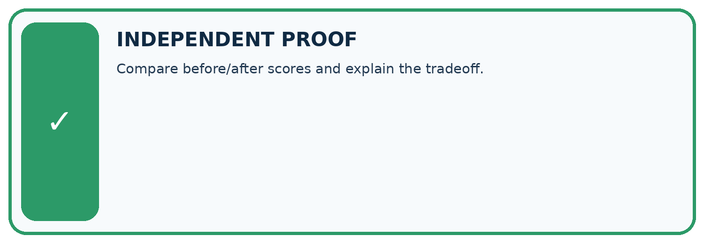
CHALLENGE Compare before/after scores and explain the tradeoff.
1. My fresh example, trace, calculation, or design:
2. My evidence that it works (include a boundary or missing-data case):
3. One limitation, fairness concern, or situation needing human review:
SELF-CHECK □ I explained the mechanism □ I used evidence □ I tested a fresh case □ I named a limitation □ I can answer ‘why?’
Student lesson · 13 of 17
Study a complete case
Week 35 Worked case
Use the supplied details to practise the weekly concept before attempting the independent question. This case extends the illustrated lesson.
The situation
A repair raises success from 7/10 to 9/10 on the same validation set.
The question
What belongs in the improvement claim?
Worked explanation
Confirm fixed criteria, inspect remaining and introduced failures, then test the chosen version on fresh final cases.
Explain it in your own words
Which detail supports the answer, and why does it matter?
Trace the supplied case visually
Improve with comparable evidence
| Evidence or stage | Value or result |
|---|---|
| Before | Save results and failures |
| Revision | Change one identified cause |
| Retest | Use the same development cases |
| Final check | Reserve fresh cases |
A repair raises success from 7/10 to 9/10 on the same validation set.
What belongs in the improvement claim?
Confirm fixed criteria, inspect remaining and introduced failures, then test the chosen version on fresh final cases.
Student lesson · 14 of 17
Try a new case independently
Independent case: Repair independently
Write the eligibility predicate for at most 12 minutes and a regression set including 11,12,13 and 0. Add one chooser tie case and one invalid-data case to rerun.
Attempt this case before feedback. Record any help. Earlier examples below are further practice; a case already practised with feedback cannot establish fresh transfer.
Week 35 Independent application
Close the worked explanation. Apply the idea to this different question without copying.
After changing a scoring weight, the system fixes one request but breaks two previously correct ones. What should the improvement record say?
My answer, with a trace, calculation or supporting evidence
Create and test
Change one relevant detail. Predict the result before testing. Include a boundary or missing-information case when it helps reveal a limit.
My changed input and expected result
Connect to your project
Publish the cause, one change, fixed test set, before/after evidence, and remaining limitation.
The evidence I will keep
Your teacher has the independent answer and scoring criteria. Complete the matching workbook week to keep your practice evidence together.
Transfer practice from the original programme
After a scoring change, four old failures pass but two previous passes fail. On the original ten cases there were six passes. Compute the new total and explain what else should be reported.
Use feedback to improve
Attempt the independent case before hints. Record whether you worked alone, used a hint or followed a model. After feedback, fix the first unsupported step and explain why it changed. A later check uses a changed case, not a copied answer.
Student lesson · 15 of 17
Your lesson route
Start with this question: A fictional recommender excludes books at an intended including equality page limit.
| By the end, I can | How I will show it |
|---|---|
| Repair a specific observed failure | Explain the deciding step, show a trace or test, and state one limit. |
| Check that earlier behavior still works | Explain the deciding step, show a trace or test, and state one limit. |
| Keep a truthful change and failure record | Explain the deciding step, show a trace or test, and state one limit. |
Remember → watch and explain → try with help → investigate → try independently → keep project evidence. Your teacher may spread this lesson across several classes.
Keep your first prediction. Compare it with what the evidence shows and explain any change.
Student lesson · 16 of 17
Finish and return
Close your notes. Explain this goal in your own words: Repair a specific observed failure
If you are unsure, return to the worked picture and explain one arrow. If you are ready, change an input or assumption and justify your prediction.
Save your workbook evidence. At the next review, try a different case before opening your old answer.
Student lesson · 17 of 17
Supported practice, repair and portfolio
Use this supported practice once, in the browser or on paper. Keep the reserved independent assessment for a separate first attempt before teacher feedback.
A fictional recommender excludes books at an intended including equality page limit.
Practice 1: explain the deciding evidence
Which labelled step matches this detail? Rerun 99,100,101; invalid pages; tied scores; reversed row order.
1. Identify cause
2. Expected revised result
3. Challenge repair
4. Focused repair
Hint if needed: Read the steps in the pictorial case. Match the supplied detail to the stage that performs or records it.
After your attempt, compare with the supported explanation: Challenge repair Rerun 99,100,101; invalid pages; tied scores; reversed row order. A focused change makes the claim about what caused the error testable: the equality comparison rule caused this specific failure. Regression tests check surrounding behavior that should remain unchanged. A tie case and reversed input order are necessary because a correct boundary does not ensure deterministic selection. Log the old failure and revised replay separately.
Practice 2: explain the deciding evidence
Changed-case practice: An alternative patch simply increases the limit to 101. Which conclusion is supported by the supplied facts?
1. We can decide the result without examining the changed input or the procedure.
2. This one example guarantees correct results for every future input.
3. C is wrongly admitted as well as A.
Hint if needed: Use the changed condition and the deciding step in the pictorial trace. The answer must say what follows from those facts.
After your attempt, compare with the supported explanation: C is wrongly admitted as well as A. Changing the maximum alters the contract instead of repairing its comparison.
Repair a missing building block
Review Test Diverse Users (ai-2/34). Goal: Evaluate across varied cases. Short practice: Can these records establish performance for different user groups?. Return to this week and explain what you changed.
Review Project Problem and Success Test (ai-2/32). Goal: Define a small application purpose. Short practice: Write an equality test and explain which requirement it checks.. Return to this week and explain what you changed.
Review Evidence and Sources (ai-2/29). Goal: Explain the mechanism and terminology of claim support and citation evaluation. Short practice: Why is the original answer not fully supported despite having citations on every claim?. Return to this week and explain what you changed.
Predict, run and debug
The browser lab lets you edit the supported Python examples already included in this lesson. Predict first, run, inspect the actual output or error, change one input, then run again. Keep code, predictions, actual results and a reasoned revision together. On paper, label your result as a trace rather than an execution.
Keep your completed work
Use Download completed work in the hosted lesson to export your answers, reflections, practice feedback and code-run evidence. Open the HTML copy to read or print it. Drafts stay in this browser when storage is available; clear drafts on a shared device.